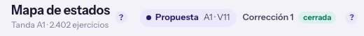
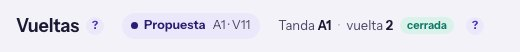
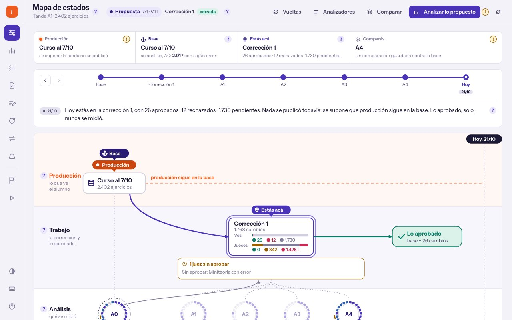

4
179Presentación ·
La tanda, una sola, y cada pestaña mira la suya
La tanda se lee una vez para las diez pantallas. La que mirás queda en la pestaña y en el link.
Lecturas de la tanda11 → 1Tanda elegidaservidor → pestañaReglas, cada una con su prueba10
11 → 1
lugares que leen la tanda, en ocho pantallas
300 KB
lo que lee el servidor de un archivo de tanda de 300 MB
1 = 1
el mismo número de corrección en las diez pantallas; hoy, «1» y «2»
Relevado en ittm master 59c63ed58 · tus cuatro respuestas del 21/10 ya están adentro · sin consultar modelos
Dónde estamos · cómo se lee la tanda, hoy una tanda, once lecturas
Hoy cada pantalla lee la tanda por su cuenta
Y el orden del curso no se relee nunca: después de publicar, sigue el viejo hasta reiniciar el tablero.
1 SesionDeCorrecciones._elegida + POST /tanda/elegir · 2 view.batch, mapa.batch, vista.tanda, valor.tanda… · 3 batch report + batches/<id>.json · Recordada<OrdenDelCurso> sin clave
El caso · la tanda A1, hoy en el 7800 corrección 1, versión 8, cerrada
La misma tanda dice «Corrección 1» y «vuelta 2»
Hoy


✕Vueltas le suma 1: cree que content-audit cuenta desde 0.
Con la etapa
Mapa de estadosTanda A1 · Corrección 1 · versión 8cerrada1
VueltasTanda A1 · Corrección 1 · versión 8cerrada1
Cada análisis de Vueltasversión 5 · 9/10 05:342
- 1El mismo texto en las diez, de la misma lectura.
- 2Cada análisis, por su versión y su fecha.
Hoy: capturas del 7800 del 21/10 · content-audit numera la tanda al abrirla (correctionRevision) y otra vuelta sólo sube contentVersion · vista_de_vueltas.dart suma 1
Navegador · qué entra al store
Una consulta trae las tandas; la pestaña dice cuál mira
js/estado/tanda.js (nuevo, inyectado en la puerta, etiqueta «tanda») · js/estado/mirando.js: tanda de la pestaña · aviso «tanda» → etiqueta «tanda»
Navegador · la tanda va en el link
El link dice qué tanda mirás: se manda y abre lo mismo
1Abrís un linkmapa.html?tanda=A1-viejaLa pestaña mira ésa.
2Pasás a Vueltasla barra lleva ?tanda=Vueltas muestra la misma.
3Recargáso atrás y adelanteSigue en la misma.
4Otra pestañaSigue en la abierta: nadie se la cambió.
Qué decide
Sin elegirla abierta; si no hay, la última publicadala que eligió otra pestaña
Una que ya no existela abierta, con un avisouna pantalla en blanco
conectar() lee ?tanda= antes de leer nada y reescribe los links de la barra · Ejecuciones filtra con ?solo=tanda
Las diez pantallas · hoy → con la etapa
La barra lateral dice qué tanda mirás, en las diez
Hoy

✕Estadísticas, Ejecuciones, Exámenes y Problemas no dicen qué tanda es.
Mirando una tanda vieja
A1 · C1 ●1Mirás una tanda vieja: A1 · Corrección 1 · publicadaVolver a la abierta2
VueltasTanda A1 · Corrección 1 · versión 6publicada
Otra vuelta · Medir y cerrarEstimar gratis3
- 1La marca de la barra: nivel, corrección y estado, en las diez.
- 2Con una vieja, una línea arriba y volver con un toque.
- 3Lanzar, medir y estimar, apagados; su (!) dice por qué.
Hoy: el Mapa en el 7800 · Con la etapa: un dibujo · la marca la pone conectar() · lanzar sobre otra tanda ya da TANDA_DISTINTA
Cómo se pone al día · se cierra la tanda desde la terminal
Un aviso de «tanda» cambia el encabezado de las diez
1La terminal cierra la tandao una corrida que terminaEl servidor avisa «tanda».
2La pestaña relee la consulta1 ms si nada cambióUna sola, la vean las que la vean.
3Cambian marca y encabezadosabierta → cerradaLas diez a la vez.
4La pantalla relee lo suyoSólo si cambió su tanda: estado o versión.
Qué arregla de paso
→El vigilante que cierra una corrida también avisa «tanda».
Hoy avisa «corridas» y «análisis», y la tanda queda vieja.
Aviso «tanda» → etiqueta «tanda» en la puerta · conectar().alCambiarLaTanda · avisarLoQueCierraElVigilante sube Tema.tanda (pendiente del brief 175)
Qué se borra · las once lecturas
Cada pantalla guarda lo que leyó, nunca la tanda
Hoy
- Seis copias de la tanda, cada una con su forma.
- Correcciones elige para todo el servidor.
- Vueltas toma la tanda de su propia lectura.
- El filtro de Ejecuciones tiene su tanda.
- El diálogo de lanzar copia la tanda de quien lo abre.
Con la etapa
- Guardan el número y la versión que leyeron.
- Elegir cambia sólo la pestaña.
- Vueltas pide las corridas de la tanda que mirás.
- «Sólo esta tanda»: la de la pestaña.
- El diálogo lee la misma tanda.
Lo leído conserva su número y versión: Correcciones los manda con cada decisión, para que no se decida sobre algo que no viste
Servidor · un lector de la tanda, por número
El servidor lee el principio y el final, no 300 MB
1Mira cada archivo de tandatamaño y fechaSi no cambió, contesta lo que ya sabía.
2Si cambió, lee 300 KBel principio y el finalNivel, estado, corrección, versión, apertura.
3Contesta todas las tandasY cuál es la de por omisión, con la regla del CLI.
Comparar y Analizadores
→Piden la tanda por número al lector: una lectura por cambio, para las dos.
El orden del curso
→Tiene versión: la fecha de sus cuatro archivos. Publicar la cambia y se relee.
lib/tablero_html/tanda/: lector, escáner (con la lectura entera de respaldo) y GET /api/tanda · sin batch report · OrdenDelCurso.huellaDe
Servidor · sin tanda elegida en el servidor
Cada lectura dice qué tanda quiere
CorreccionesUna vista por tanda: dos pestañas en tandas distintas deciden cada una en la suya.
Mapa, Vueltas, PublicarLeen la tanda que les pide la pestaña.
Comparar y AnalizadoresPor número, del lector; se ponen al día solas.
Bandeja y estimaciónSólo de la abierta: con una vieja, lo dicen.
Elegir tandaSe va: ya no hay nada que elegir en el servidor.
Sin ?tanda=Igual que hoy: la abierta, o la última publicada.
SesionDeCorrecciones sin _elegida (vistas por tanda, la generación es la edición de cada una) · RevisionCompartida.leer(batchId:) ya guardaba por tanda · 409 TANDA_NO_ABIERTA
Cómo se prueba · una prueba por regla, con su nombre
Diez reglas, cada una con su prueba
1Dos pestañas · una mira una vieja: Publicar, en la otra, no cambiaauto
2Se cierra desde la terminal · las diez cambian el encabezadoauto
3Una pantalla guarda una tanda · la prueba fallaguardia
4Un link con una vieja · abre ésa; recargar la mantienecopia
5Una sola lectura · nadie más pide la tandaguardia
6El mismo número · Corrección N · versión Vauto
7Tanda vieja · lanzar y medir, apagadosauto
8Un lector por número · 300 KB; igual a leerlo enteroauto
9El orden del curso · se relee al publicarauto
10El vigilante avisa «tanda»auto
FEAT-LATAN · requirements/2026-10-21.02_la-tanda · cada prueba nombra su regla F-LATAN-R0NN · «copia»: la copia de verificación del tablero, en 127.0.0.1:7845, con stubs y sin modelos
Lo que no toca · lo que ya funciona y se queda igual
Cambia de dónde sale la tanda, no lo que muestra cada pantalla
El CLI y sus archivosNada cambia en content-audit: el lector sólo lee.
Los jueces y «al día»Son de la etapa 5, que corre en paralelo.
Decidir en CorreccionesFrena sólo con la tanda publicada, como hoy.
Los relojes de Problemas y ExámenesSe van en las etapas 5 y 8.
Si alguna de éstas tuviera que cambiar, no la cambio: te llega como pregunta.
Lo de esta diapositiva son tus respuestas del 21/10 y el reparto con la etapa 5 (rama claude/estado-etapa-5)
Lo que necesita de vos · con la recomendación
Un OK al diseño y dos detalles
¿Sin elegir, se mira la abierta y, si no hay, la última publicada?
Sí, como el CLI · recomendadoLa última abierta, por fecha
Es lo que muestran hoy todas las pantallas y la app de Flutter.Un link viejo «corridas de la tanda X», ¿filtra o sólo mira X?
Sólo mira X · recomendadoSigue filtrando
Los links nuevos filtran con ?solo=tanda; los viejos son de Vueltas y se regeneran.¿Arranco así?
Sí · recomendadoCambiar algo
Primero el servidor (la consulta y el lector), después la pestaña, una pantalla por vez.Lo que no se pregunta lo decido yo y está en las diapositivas de navegador y servidor
En una frase
La tanda se lee una vez, y la que mirás vive en tu pestaña y en el link.
Con tu OK escribo el requisito y arranco por el servidor: la consulta y el lector por número.
La tanda, una sola · etapa 4